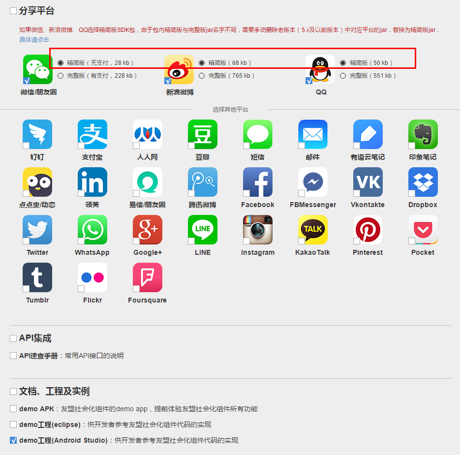
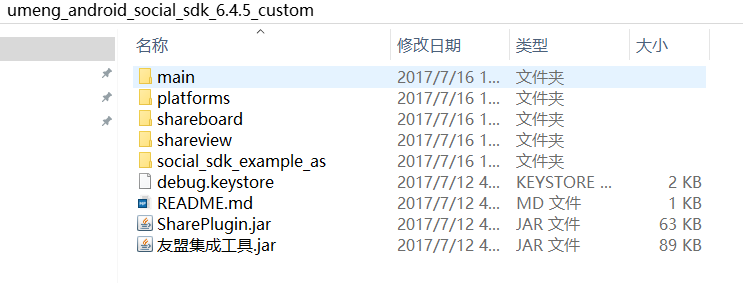
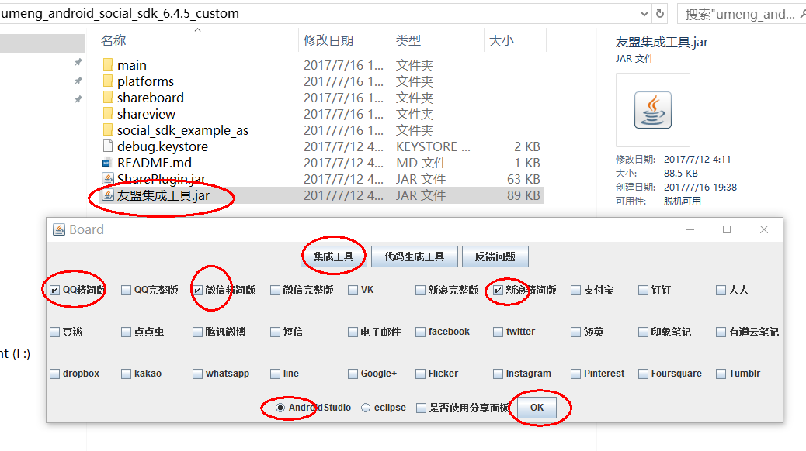
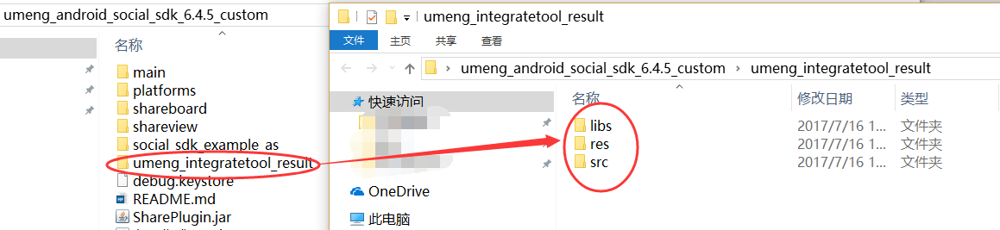
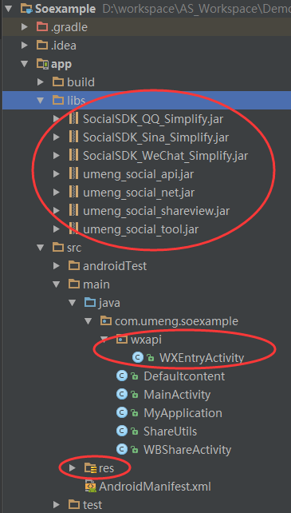
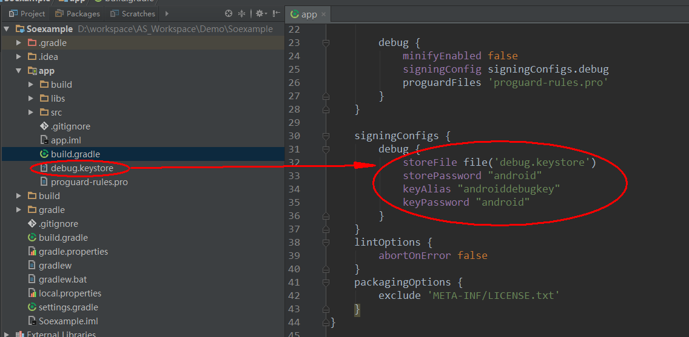
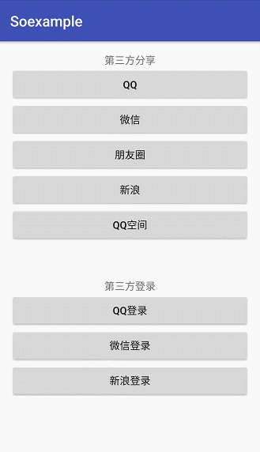

前言
最近项目需要加入第三方分享和登录功能，之前其他项目的第三方分享和登录一直都使用ShareSDK实现的。为了统一使用友盟的全家桶，所以三方分享和登录也就选择了友盟。这里记录一下完整的集成与使用流程。
一、申请友盟Appkey
直接到友盟官网申请即可。一般都不用自己去申请，跟项目经理要即可。
（我这里的Demo为了方便就直接用友盟Demo里面提供的Appkey，但是创建的项目包名也要和友盟一样。真实项目要自己另外申请）
二、下载SDK
下载地址：http://dev.umeng.com/social/android/sdk-download
下载的时候根据自己需求进行选择，我这里选择选择的是精简版（包含常用的分享与登录功能），只测试微信，QQ，新浪微博。

下载后解压出来是这样的：

三、准备资源
使用友盟的集成工具快速集成友盟的分享SDK：双击 友盟集成工具.jar–>选择使用的平台和IDE，如图：

点击OK键，会在当前目录生成名为umeng_integratetool_result的文件夹，如图：

四、开始集成
（1）将上面的文件夹依次粘贴到工程相应的文件夹即可，如图：

（2）将debug.keystore文件拷贝到项目的app目录下（对应app build中相应的位置），目的是为了使用友盟的签名，如图：

（3）添加回调Activity
微信回调：
其实在第一步拷贝的时候已经添加了。即在包名目录下创建wxapi文件夹，新建一个名为WXEntryActivity的activity继承WXCallbackActivity
QQ与新浪微博的回调：
QQ与新浪不需要添加Activity，但需要在使用QQ分享或者授权的Activity中添加如下代码：
（注意onActivityResult不可在fragment中实现，如果在fragment中调用登录或分享，需要在fragment依赖的Activity中实现）
@Override
protected void onActivityResult(int requestCode, int resultCode, Intent data) {
super.onActivityResult(requestCode, resultCode, data);
UMShareAPI.get(this).onActivityResult(requestCode, resultCode, data);
}（4）配置清单文件Android Manifest
添加权限：
<uses-permission android:name="android.permission.ACCESS_NETWORK_STATE" />
<uses-permission android:name="android.permission.ACCESS_WIFI_STATE" />
<uses-permission android:name="android.permission.READ_PHONE_STATE" />
<uses-permission android:name="android.permission.WRITE_EXTERNAL_STORAGE"/>
<uses-permission android:name="android.permission.READ_EXTERNAL_STORAGE"/>
<uses-permission android:name="android.permission.INTERNET" />
<uses-permission android:name="android.permission.ACCESS_FINE_LOCATION" />
<uses-permission android:name="android.permission.ACCESS_COARSE_LOCATION" />
<uses-permission android:name="android.permission.ACCESS_LOCATION_EXTRA_COMMANDS" />添加sdk中需要的Activity：
<!--微信-->
<activity
android:name=".wxapi.WXEntryActivity"
android:configChanges="keyboardHidden|orientation|screenSize"
android:exported="true"
android:screenOrientation="portrait"
android:theme="@android:style/Theme.Translucent.NoTitleBar"/>
<!--新浪微博-->
<activity
android:name=".WBShareActivity"
android:configChanges="keyboardHidden|orientation"
android:screenOrientation="portrait">
<intent-filter>
<action android:name="com.sina.weibo.sdk.action.ACTION_SDK_REQ_ACTIVITY"/>
<category android:name="android.intent.category.DEFAULT"/>
</intent-filter>
</activity>
<!--qq精简版-->
<activity
android:name="com.umeng.qq.tencent.AuthActivity"
android:launchMode="singleTask"
android:noHistory="true">
<intent-filter>
<action android:name="android.intent.action.VIEW"/>
<category android:name="android.intent.category.DEFAULT"/>
<category android:name="android.intent.category.BROWSABLE"/>
<!--这里的scheme是qq分享要用的，100424468为自己申请的appid，真实项目中需要替换-->
<data android:scheme="tencent100424468"/>
</intent-filter>
</activity>
<activity
android:name="com.umeng.qq.tencent.AssistActivity"
android:configChanges="orientation|keyboardHidden|screenSize"
android:screenOrientation="portrait"
android:theme="@android:style/Theme.Translucent.NoTitleBar"/>
<!--分享编辑页-->
<activity
android:name="com.umeng.socialize.editorpage.ShareActivity"
android:excludeFromRecents="true"
android:theme="@style/Theme.UMDefault"
/>添加友盟appkey：
<meta-data
android:name="UMENG_APPKEY"
android:value="561cae6ae0f55abd990035bf">
</meta-data>（5）配置三方appkey
新建MyApplication继承Application（注意：需要在清单文件中配置该MyApplication），在MyApplication文件中配置三方平台的appkey和初始化sdk。如下:
public class MyApplication extends Application {
@Override
public void onCreate() {
super.onCreate();
UMShareAPI.get(this);//初始化sdk
//开启debug模式，方便定位错误，具体错误检查方式可以查看http://dev.umeng.com/social/android/quick-integration的报错必看，正式发布，请关闭该模式
Config.DEBUG = true;
}
//各个平台的配置
{
//微信
PlatformConfig.setWeixin("wxdc1e388c3822c80b", "3baf1193c85774b3fd9d18447d76cab0");
//新浪微博(第三个参数为回调地址)
PlatformConfig.setSinaWeibo("3921700954", "04b48b094faeb16683c32669824ebdad","http://sns.whalecloud.com/sina2/callback");
//QQ
PlatformConfig.setQQZone("100424468", "c7394704798a158208a74ab60104f0ba");
}
}（6）分享代码MainActivity.java：
public class MainActivity extends AppCompatActivity {
private String TAG = this.getClass().getSimpleName();
@Override
protected void onCreate(Bundle savedInstanceState) {
super.onCreate(savedInstanceState);
setContentView(R.layout.activity_main);
}
public void qq(View view) {
ShareUtils.shareWeb(this, Defaultcontent.url, Defaultcontent.title
, Defaultcontent.text, Defaultcontent.imageurl, R.mipmap.icon_logo_share, SHARE_MEDIA.QQ
);
}
public void weiXin(View view) {
ShareUtils.shareWeb(this, Defaultcontent.url, Defaultcontent.title
, Defaultcontent.text, Defaultcontent.imageurl, R.mipmap.icon_logo_share, SHARE_MEDIA.WEIXIN
);
}
public void weixinCircle(View view) {
ShareUtils.shareWeb(this, Defaultcontent.url, Defaultcontent.title
, Defaultcontent.text, Defaultcontent.imageurl, R.mipmap.icon_logo_share, SHARE_MEDIA.WEIXIN_CIRCLE
);
}
public void sina(View view) {
ShareUtils.shareWeb(this, Defaultcontent.url, Defaultcontent.title
, Defaultcontent.text, Defaultcontent.imageurl, R.mipmap.icon_logo_share, SHARE_MEDIA.SINA
);
}
public void Qzone(View view) {
ShareUtils.shareWeb(this, Defaultcontent.url, Defaultcontent.title
, Defaultcontent.text, Defaultcontent.imageurl, R.mipmap.icon_logo_share, SHARE_MEDIA.QZONE
);
}
@Override
protected void onActivityResult(int requestCode, int resultCode, Intent data) {
super.onActivityResult(requestCode, resultCode, data);
UMShareAPI.get(this).onActivityResult(requestCode, resultCode, data);
}（7）分享工具类ShareUtils.java：
public class ShareUtils {
/**
* 分享链接
*/
public static void shareWeb(final Activity activity, String WebUrl, String title, String description, String imageUrl, int imageID, SHARE_MEDIA platform) {
UMWeb web = new UMWeb(WebUrl);//连接地址
web.setTitle(title);//标题
web.setDescription(description);//描述
if (TextUtils.isEmpty(imageUrl)) {
web.setThumb(new UMImage(activity, imageID)); //本地缩略图
} else {
web.setThumb(new UMImage(activity, imageUrl)); //网络缩略图
}
new ShareAction(activity)
.setPlatform(platform)
.withMedia(web)
.setCallback(new UMShareListener() {
@Override
public void onStart(SHARE_MEDIA share_media) {
}
@Override
public void onResult(final SHARE_MEDIA share_media) {
activity.runOnUiThread(new Runnable() {
@Override
public void run() {
if (share_media.name().equals("WEIXIN_FAVORITE")) {
Toast.makeText(activity, share_media + " 收藏成功", Toast.LENGTH_SHORT).show();
} else {
Toast.makeText(activity, share_media + " 分享成功", Toast.LENGTH_SHORT).show();
}
}
});
}
@Override
public void onError(final SHARE_MEDIA share_media, final Throwable throwable) {
if (throwable != null) {
Log.d("throw", "throw:" + throwable.getMessage());
}
activity.runOnUiThread(new Runnable() {
@Override
public void run() {
Toast.makeText(activity, share_media + " 分享失败", Toast.LENGTH_SHORT).show();
}
});
}
@Override
public void onCancel(final SHARE_MEDIA share_media) {
activity.runOnUiThread(new Runnable() {
@Override
public void run() {
Toast.makeText(activity, share_media + " 分享取消", Toast.LENGTH_SHORT).show();
}
});
}
})
.share();
//新浪微博中图文+链接
/*new ShareAction(activity)
.setPlatform(platform)
.withText(description + " " + WebUrl)
.withMedia(new UMImage(activity,imageID))
.share();*/
}
}
效果如下：

Demo下载地址：https://github.com/wildma/UMengThirdPartyShareLogin
如果对你有帮助，点个star就是对我最大的支持~